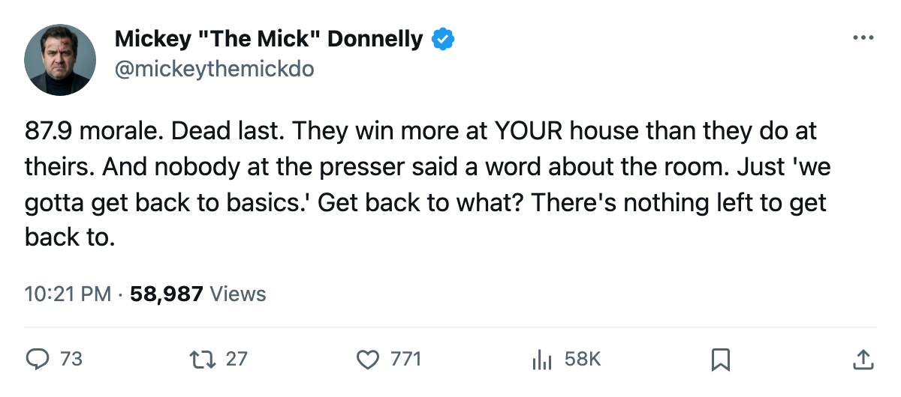
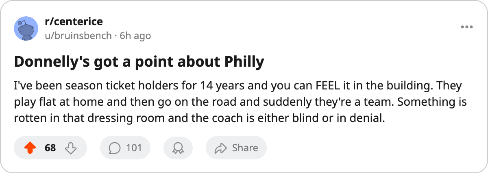

MORALE 87.9. WORST ROOM IN HOCKEY. THEY WIN MORE AT YOUR HOUSE THAN THEIRS.
Philadelphia plays 8-5 on the road and 6-9 at home. The Bureau's Morale Scale has them dead last at 87.9. When your own building is the problem, the cure is someone else's.
 Mickey "The Mick" DonnellyColumnist, ex-goalie · The Penalty Box
Mickey "The Mick" DonnellyColumnist, ex-goalie · The Penalty Box
The piece
 Philadelphia Flyers have the unhappiest clubhouse in this league. The Bureau's Morale Scale puts them at 87.9, dead last among 30 clubs, and the record tells you exactly what that costs: 6-9 at home, 8-5 on the road. They play three games better when they don't have to walk through their own dressing room.
Philadelphia Flyers have the unhappiest clubhouse in this league. The Bureau's Morale Scale puts them at 87.9, dead last among 30 clubs, and the record tells you exactly what that costs: 6-9 at home, 8-5 on the road. They play three games better when they don't have to walk through their own dressing room.
A 30-club league, and  Neil Little69 plays 62.7 minutes a night for $0.50M at morale 74. A 69 overall. Seven games in. The backup nobody wanted is the starter because nobody else wants to be there either. That is not a plan. That is a surrender dressed up as a depth decision.
Neil Little69 plays 62.7 minutes a night for $0.50M at morale 74. A 69 overall. Seven games in. The backup nobody wanted is the starter because nobody else wants to be there either. That is not a plan. That is a surrender dressed up as a depth decision.
Then you get  Cliff Ronning75 at $2.77M for 9.4 minutes a night, morale 74, a zero-year deal he could walk from tomorrow if his knees still worked. Twenty-eight games, 9.4 a night. That is a player the coach sits down and forgets about, and the man is unhappy about it, and the room feels it. You do not pay $2.77M for a ghost and call it leadership.
Cliff Ronning75 at $2.77M for 9.4 minutes a night, morale 74, a zero-year deal he could walk from tomorrow if his knees still worked. Twenty-eight games, 9.4 a night. That is a player the coach sits down and forgets about, and the man is unhappy about it, and the room feels it. You do not pay $2.77M for a ghost and call it leadership.
Your building costs you games
Six wins and nine losses in front of your own fans. Eight wins and five losses on someone else's ice. I have been a goaltender. I know what it feels like when the room is poisoned and you cannot wait to get on the bus. You play freer on the road because you do not have to look at the man on the next hook who you cannot stand.
Philadelphia Flyers are 11-12-2. Thirty points. $55.67M. The Bureau says $1.86M a point. Not the worst value in hockey, but the room is, and that is what the coach controls.  Donald Brashear75 leads this club in penalty minutes at 81 through 28 games. That is not a hot head, that is a man swinging because nobody has told him what this team is supposed to be.
Donald Brashear75 leads this club in penalty minutes at 81 through 28 games. That is not a hot head, that is a man swinging because nobody has told him what this team is supposed to be.
The coach sits Ronning. The coach rides a 74-morale backup for 62.7 minutes. The coach watches this club lose more at home than on the road and has no answer on the sheet. I do not mean that as a joke. There is nothing in the record that shows a system, a structure, a plan that would make a man want to show up.
Philadelphia Flyers host  Dallas Stars on Saturday. Dallas is 18-7-4, 44 points, on a four-game win streak, 9-7 on the road. Philadelphia is 6-9 in their own building with the worst morale in the league. I know what that game looks like. You do not need the Bureau's Development Index to tell you that. You need a pulse.
Dallas Stars on Saturday. Dallas is 18-7-4, 44 points, on a four-game win streak, 9-7 on the road. Philadelphia is 6-9 in their own building with the worst morale in the league. I know what that game looks like. You do not need the Bureau's Development Index to tell you that. You need a pulse.
Fix the room or sell the tickets. Those are your two options and you are paying for the first one already.

